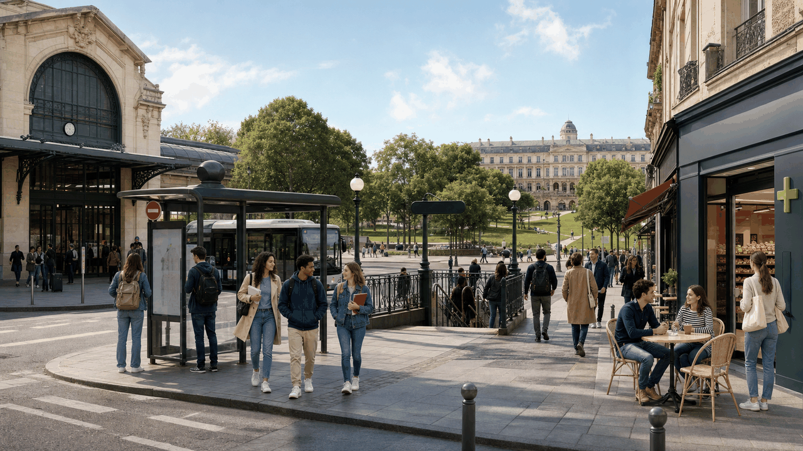
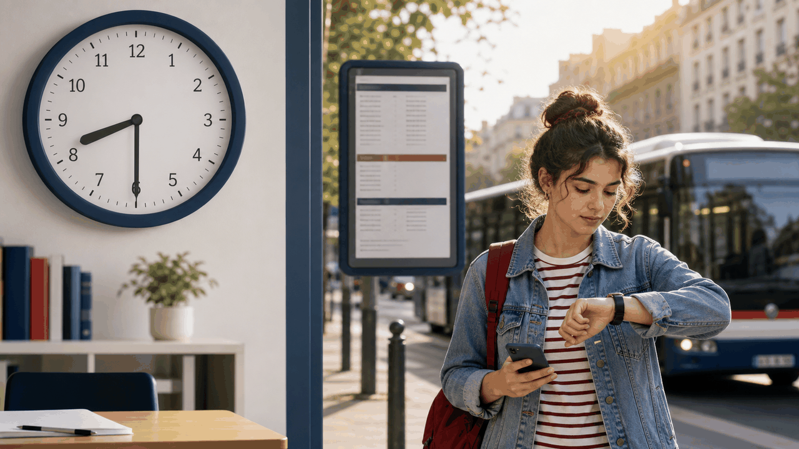
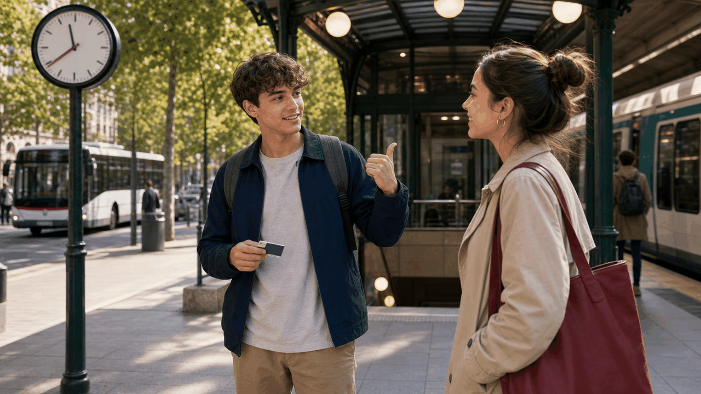

Objectif étudiant
Ce que vous devez savoir faire à la fin du thème
Vous devez pouvoir dire à quelle heure vous partez, quel transport vous prenez, où vous allez en ville, comment demander un itinéraire simple, ce que vous allez faire bientôt et ce que vous venez de faire : Je vais prendre le métro à huit heures. Je viens d’arriver à la station.
1 · Les transports
Dire comment on se déplace
Pour parler d’un moyen de transport, utilisez généralement en + transport. La grande exception à mémoriser est à pied.
en busJe vais à l’école en bus.
en métroElle va au centre-ville en métro.
en trainNous allons à Lyon en train.
en taxiIl rentre en taxi.
en voitureIls vont au supermarché en voiture.
à véloTu vas au parc à vélo.
à motoElle arrive à moto.
à piedJe vais à la bibliothèque à pied.
À retenir : on dit en bus, en métro, en train, mais à pied. Ne dites pas en pied.
2 · Les lieux de la ville
Dire où l’on va

à la + fémininJe vais à la gare.
au + masculinTu vas au parc.
à l’ + voyelleElle va à l’université.
aux + plurielNous allons aux toilettes.
Vocabulaire prioritaire : la gare, l’arrêt de bus, la station de métro, l’école, l’université, le café, la pharmacie, le supermarché, le parc, le centre-ville.
Point grammatical : à + le devient au. On dit je vais au parc, pas à le parc.
3 · Dire l’heure
Quelle heure est-il ?

Heure exacte : Il est huit heures.
Et demie : Il est huit heures et demie.
Et quart : Il est neuf heures et quart.
Midi / minuit : Il est midi. Il est minuit.
Moment d’une action : Le bus arrive à sept heures trente.
Attention : pour demander l’heure, utilisez Quelle heure est-il ?. Pour dire l’heure d’un rendez-vous, utilisez à : Le cours commence à neuf heures.
5 · Le futur proche
Aller + infinitif = projet immédiat
Formesujet + aller au présent + infinitif
ExempleJe vais prendre le bus.
NégationJe ne vais pas prendre le taxi.
QuestionEst-ce que tu vas partir à huit heures ?
JeJe vais visiter le centre-ville.
TuTu vas prendre le métro.
Il / ElleElle va acheter un ticket.
NousNous allons aller à la gare.
VousVous allez rentrer à pied.
Ils / EllesIls vont déjeuner au café.
Différence : Je prends le bus peut être une habitude ou une action présente. Je vais prendre le bus annonce un plan proche.
6 · Le passé récent
Venir de + infinitif = action qui vient de se passer

Formesujet + venir de + infinitif
ExempleJe viens d’arriver.
NégationJe ne viens pas d’arriver.
QuestionEst-ce que tu viens de sortir ?
Devant une voyelle, de devient d’ : Je viens d’arriver, elle vient d’entrer, nous venons d’écouter l’audio.
7 · Mini-dialogue modèle
À la station de métro
Clara : Tu vas prendre le métro avec moi ?futur proche
Noé : Oui, je viens d’arriver à la station.passé récent
Clara : Le cours commence à neuf heures.heure
Noé : Après le cours, je vais aller à la bibliothèque.projet
Erreurs fréquentes
À corriger dès le début
Je vais en pied. → Je vais à pied.exception
Je vais à le parc. → Je vais au parc.contraction
Je vais prends le bus. → Je vais prendre le bus.infinitif
Il est huit heure. → Il est huit heures.pluriel
Je viens de arrive. → Je viens d’arriver.d’ + infinitif